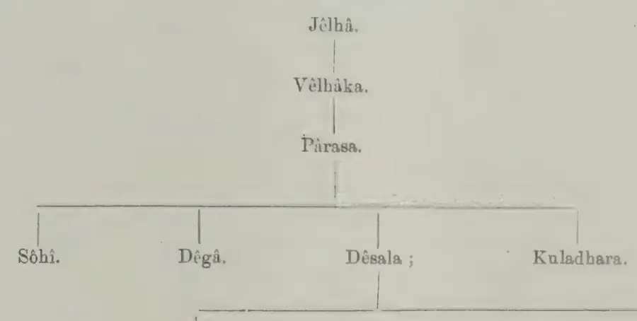
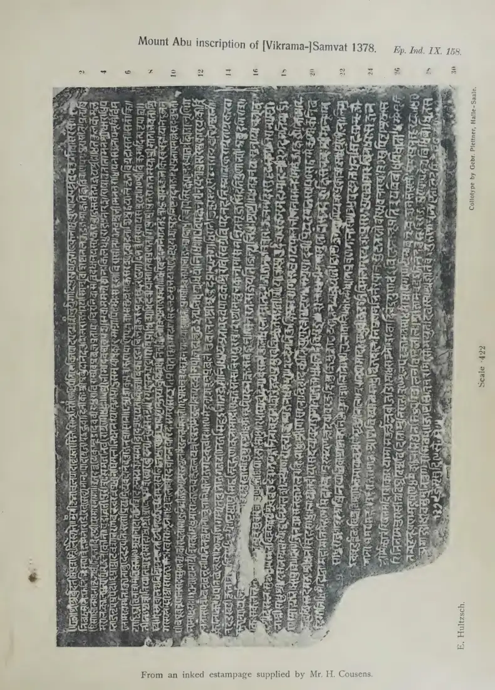

Mount Âbû Vimala temple inscription
MOUNT ABU VIMALA TEMPLE INSCRIPTION
OF [VIKRAMA-] SAMVAT 1378.
BY PROFESSOR F. KIELHORN, C.I.E.; GÖTTINGEN.
In 1828 H. H. Wilson, in As. Res. Vol. XVI. p. 284 ff., published an account of the inscriptions on the mountain Arbuda, the modern Mount Âbû in the Sirohi State of Râjputâna, from copies presented to the Asiatic Society of Bengal by Captain Speirs, Political Agent at Sirohi. In that account Prof. Wilson gave full translations of one of the two large inscriptions at the temple of Nêminâtha, the texts of which were first published in 1883 by Mr. A. V. Kâthavate, and which have now been edited, with facsimiles, by Prof. Lüders, above, Vol. VIII. p. 200 ff.; of the Guhila inscription in the neighbourhood of the temple of Achalêsvara, edited by myself in Ind. Ant. Vol. XVI. p. 347 ff.;1 and of the Achalêsvara temple inscription of which I have treated above, p. 79 ff.2 Of other inscriptions only short abstracts of the contents were given, apparently based on an account in Hindi that had been drawn up by a native scholar.
For many years afterwards little3 was done for the study of the Mount Âbû inscriptions. But in the cold season of 1900-01 Mr. Cousens, Superintendent of the Archæological Survey of India, Western Circle, while staying at Âbû, had impressions (or, in a few cases, eye-copies) prepared of all inscriptions which are now found on the mountain; and by sending them to the Government Epigraphist he for the first time has placed at our disposal trustworthy materials for a critical examination of these records. Most of these inscriptions are very short; none of them go back beyond the middle of the 11th century A.D.; and considering their great number, the data furnished by them for the political history of the country are disappointingly few. In other respects, some are of considerable interest and well deserve to be made more generally accessible, while a good many contain some name, or expression, or date, or perhaps only some mark or letter, which, unimportant as it may seem at first sight, may prove of use on a future occasion.
The number of the inscriptions in Mr. Cousens' collection, which has been sent to me by Prof. Hultzsch, is 298, of which 270 are ink-impressions and 28 eye-copies only. Of the total number, 148 are from the temple of Rishabha (Âdinâtha) which was founded by Vimala;4 97 from the temple of Nêminâtha, founded by Têjahpâla;5 30 from the temple of Achalêsvara, and 13 from other localities. Of the Vimala temple inscriptions 126 are dated, the earliest date being of the [Vikrama] year 1119 (about A.D. 1062), in a short inscription (No. 1780 of Mr. Cousens' List) of a minister of the Chaulukya Bhîmadêva I., and the latest (in No. 1874) of the [Vikrama] year 1785 (about A.D. 1728); between the two, the years which most
1 A kind of facsimile of the inscription may be seen in Bhâvnagar Inser. Plate xxxvi.
2 Prof. Wilson also gave a translation of the inscription of the Vikrama year 1265, published by Dr. Cartellieri in Ind. Ant. Vol. XI. p. 221 ff., the original of which is now at the town of Sirohi; see Progress Report of the Archæol. Survey of India, W. Circle, for 1905-1906, p. 47.
3 For inscriptions that have been edited (in addition to those translated by Prof. Wilson) see my Northern List, Nos. 261 and 265.
4 In inscriptions the temple is called Vimala-vasahikâ, Vimalasya vasahikâ, Vimala-vasahi, and Vimala-vasatikâ-ttrtha, in literary works also Vimala-vasati. Above, p. 81, I have already stated that the names 'Vimala Sâh' or 'Vimala Shâh,' recently written 'Vimala Sâ,' in my opinion owe their origin to a misunderstanding of the term Vimala-vasahikâ, 'Vimala's temple.' Similarly, Lâniga-vasahikâ has given rise to the name (for Têjahpâla's brother) 'Luniga Sahikâ,' in As. Res. Vol. XVI. p. 309.
5 Above, Vol. VIII. p. 200, Prof. Lüders has shown that the ordinary name of the temple is Lânasimha (or Lânasiha-vasahikâ or Lâna-vasahikâ. In inscriptions I also find Lâniga-vasahikâ, Têjapâla-vasahikâ and Têjala-vasahi, and in literary works Lâniga-vasati.
frequently occur are the Vikrama years 1245 (22 times) and 1378 (25 times). Of the inscriptions at Tējahpāla's temple 77 are dated, and here the earliest dates are of the Vikrama year 1287 (about A.D. 1230), the very year in which the temple was founded, while the latest date (in No. 1748) is one of the [Vikrama] year 1911 (about A.D. 1854); no less than 47 inscriptions are dated between the Vikrama years 1287 and 1297, and 9 between 1346 and 1389. Of the 30 inscriptions at the temple of Achalēsvara 22 are dated. Here the earliest inscription appears to be one (No. 1950), unfortunately almost entirely effaced, of the [Vikrama] year 1186 (about A.D. 1129), and another (No. 1941) seems to contain a date in the [Vikrama] year 1191. What I consider to be certain is, that No. 1951 of Mr. Cousens' List is dated in the [Vikrama] year 1207 (about A.D. 1150), in the reign of the [Paramāra] Mahīmaṇdalēsvara Yaśōdhavaladēva (a feudatory of the Chaulukya Kunnārapāla, an inscription of whom is dated in the same year).1 Two other inscriptions (Nos. 1945 and 1946) are dated in the [Vikrama] years 122[5] and 122[8], the rest in 1377 and later years. Regarding the 13 remaining inscriptions, it will suffice to say that the Guhila inscription mentioned above (No. 1953 of the List) is dated in the [Vikrama] year 1342, and that the dates which occur in others are of later years.
Of the inscriptions at the temple of Nēminātha, the two largest and most important, together with 30 shorter ones, have been edited from Mr. Cousens' materials by Prof. Lüders, above, Vol. VIII. p. 200 ff. I now give the text of an inscription of the [Vikrama] year 1378, which is at the temple of Rīshabha, and the chief point of interest in which is the statement that that temple was founded in the Vikrama year 1088 (about A.D. 1031) by a certain Vimala, who had been appointed daṇḍapati at Arbuda by [the Chaulukya] Bhīmadēva [I.].
Before I proceed to describe the inscription, I may state that the date here given for the foundation of the temple is known to us also from other sources. In Ind. Ant. Vol. XI. p. 245, the late Dr. Klatt gave an extract from a Paṭtārali of the Kharatara-gachchha, according to which 'the minister Vimala, who belonged to the Pōravāḍa (Prāgvāṭa) family, and who broke the parasols of thirteen Suṭṭāns and established the town of Chandrāvati, caused a temple of Rīshabhadēva to be built on the mountain Arbuda — a temple which even now is known by the name Vimala-vasahī,' and which, it is added, was consecrated by Vardhamāna-sūri in the year 1088. The same story, with the same date, is more fully given in the extracts in Prof. Weber's Catalogue of the Berlin MSS., Vol. II. pp. 1036 and 1037, where we are moreover told that, to obtain from the Brāhmaṇs the ground on which he intended to build the temple, Vimala had to cover it with gold coins, and that he expended 18 crores and 53 lacs (185,300,000) in the building of the temple. And the date also occurs in an interesting extract from Jinaprabhasūri's Tīrthakalpa, in Prof. Peterson's Fourth Report, p. 92 f. There, again, the Vikrama year 1088 is given2 for the foundation of the Vimala-vasati, and 1288 for that of the Lūniga-vasati,3 and it is also stated that, when the two temples had been demolished or damaged (bhagna) by the Mlēchchhas, they were repaired in the Śaka year 1243 (i.e. the Vikrama year 1378), the first by Lalla, the son of Mahaṇasiniha, and the other by Pīthaḍa, the son of the merchant Chanḍasiniha. We shall see below that our inscription actually records the restoration, in 1378, of Vimala's temple by Lalla (Lāliga), the son of Mahaṇasiniha, and
1 No. 129 of my Northern List.
2 So far as I can see, there is something wrong in the verses 39 and 40, as given by Prof. Peterson, but regarding the date of the construction of the Vimala-vasati there can be no doubt.
3 According to the extracts, the sūtradhāra, who built the Lūniga-vasati, was Śōbhanadēva, who is mentioned in the same way (as prāsādakāraka-sūtradhāra) in Mērutunga's Prabandhachintāmaṇi, p. 259. This builder's name actually occurs in No. 1674 of Mr. Cousens' List, an inscription of the Vikrama year 1288.— Jinaprabhasūri's account of the mountain Arbuda, from which the extracts are taken, seems to be based on inscriptions and to be quite trustworthy.
Víjađa, the son of Dhanasiñha; and the name of the person who repaired the temple of Téjahpála (the Lúpiga-vasati) is given as Pêthađa in an inscription1 at that temple, the full text of which is:—
L. 1 Öm2 || 3Á-chañdrárkkam naindatád=êsha sainghâ-|4dhíšaĵ śrímâ-
2 n Pêthađaĵ saingha-yuktaĵ | jîrnnôddháram Vastupála-
3 sya chaityê |4 tênê yên=êhâĵrbudádrau ·sva-sáraiĵ ||
The inscription with which we are more immediately concerned here5 is on a black slab, built into the side-wall of a shrine in the corridor of Vimala's temple. It contains 30 lines of writing which cover a space between 1' 7½" and 1' 8" broad by 1' 1½" high, but of which only the first 22 lines extend over the full breadth of this space; lines 23-29 are only 1' 5½" long and line 30 (which contains merely a date) only 3¾". The greater part of the writing is well preserved; but in line 16 about 10 aksharas and in line 17 about 4 aksharas are effaced, and in some places the writing is difficult to read, mainly, as it seems to me, because the letters have been formed carelessly and are so close to one another that they have not come out clearly in the ink-impression at my disposal.6 The size of the letters is between ¼" and ¾". The characters are Nágarí. The language is Sanskrit, and, with the exception of the words óm || śrí-Arbudatěrtha-prašastir=likhyatě || at the commencement, the words atha rájávalí || in line 9, and the date in line 30, the text is in verse, the number of verses being 42. In respect of orthography only few remarks are necessary. There are separate signs for the letters b and v, and the sign for the former has been wrongly employed also for v in sarbajña-, l. 16, and -sañbhabaĵ, l. 21. The palatal sibilant is used instead of the dental in manašví, l. 4, sámha- (for simha-), l. 6, and sahaśré, l. 8; and the dental instead of the palatal in nivésitam, l. 8, pésala-, l. 18, and šasi-,7 l. 29. Instead of the vowel ri we have the syllable ri in Rishabha, ll. 26 and 29; and in line 24 the author himself has written shaĵ=arttavaĵ instead of shaĵ=ritavaĵ, which would not have suited the metre.8 What is more interesting is, that in line 4 we find nripaša for nripasya, and in line 21 vadájñá instead of vadányá. The latter reminds us of the name Nyânašaktí (instead of Jñánašaktí) in Ind. Ant. Vol. XIII. p. 93, l. 26, and shows that in Rájputána as well as in the Kanarese country there could have been hardly any difference in pronunciation between jña and nya; and nripaša recalls taša and similar genitive cases of far more ancient inscriptions,9 without, of course, proving more than that the pronunciation of ś must have been similar to that of the conjunct sy. In respect of grammar I need draw attention only to the word vidadhána, in line 3, the reading of which is certain, and which the author undoubtedly has used as a 3rd person singular of the Perfect of vi-dhá (instead of vidadhé), probably misled by the participle vidadhána which was more familiar to him than the proper verbal form.10 Though the writer or engraver in some places has done his work carelessly, I believe that, with the exception of what has been entirely effaced
1 No. 1743 of Mr. Cousens' List, "on pilaster near shrine doorway of the principal temple in Vastupála's temple."
2 Denoted by a symbol.
3 Metre: Šáliní.
4 These signs of punctuation are superfluous.
5 No. 1790 of Mr. Cousens' List.
6 When my text was finished, I was able to compare impressions kindly sent to me by Mr. Gaurishankar Hirachand Ojha and by the Government Epigraphist, which in one or two places where there had been some doubt confirmed the correctness of my readings.
7 For curiosity's sake it may be stated that the Sanskrit šaša, German 'hase,' English 'hare,' seems to go back to an original šasa; compare Prof. Wackernagel's Altind. Gramm. Vol. I. p. 225.
8 Compare shaĵricha and shaĵarcha in the St. Petersburg Dictionary.
5 See Prof. Rapson in Journ. Roy. As. Soc. 1900, p. 104 f., and Prof. Franke's Páli and Sanskrit, p. 97 f., and compare the genitive cases teraša, sagaša, etc., in Ep. Zeylanica, Vol. I. p. 18 ff.
10 Proper Perfect forms which occur in the text are babháva, babhúvuĵ, chakára, didéša, pra-pédé and kárayám-áx-ituĵ.
and of perhaps the last words of verse 21, the original text may everywhere be restored with confidence.
The object of the inscription is, to record that in the [Vikrama] year 1378 two persons, Lalla (Láliga) and Vijađa, for the spiritual welfare of their parents repaired the temple of Rishabha (Âdinâtha) on the mountain Arbuda. And the inscription is divided into three parts. The first part (verses 1-13) is a praśasti or eulogy of the sacred Arbuda; but besides glorifying that locality and some mythical or divine beings (Ambikâ and Śrímâtâ) residing there, it also gives a few historical details connected with it, and especially records the foundation, in the Vikrama year 1088, of the temple of Âdinâtha by Vimala. The second part (vv. 14-23) contains a rijávalî of the chiefs who at the time of the restoration of the temple were in possession of the mountain. And the third part (vv. 24-38) gives an account of the family of the men by whom the temple was repaired. The concluding verses (39-42) record the name and spiritual lineage of the priest or teacher who consecrated the restored building, and the exact date when he did so.
To omit what is of no historical interest, the first part begins with the well-known story how on the mountain Arbuda there sprang from the fire-pit (anula-kunda, agni-kunda) of the sage Vasishtha the hero Paramâra. In his lineage appeared the hero Kanhađadêva; and in his family there was a chief named Dhandhu (Dhandhurâja), who was lord of the town of Chandrâvati and who, averse from rendering homage to the [Chaulukya] king Bhimadêva [I.] and to escape that king's anger, took refuge with king Bhôja, the lord of Dhârâ. The author then, rather abruptly, tells us that in the Prâgvâta family there was a distinguished personage named Vimala in whom religion, immerged in darkness through the wickedness of the times, suddenly shone forth again in its splendour. He was appointed by king Bhima danđapati (commander of the forces or governor) at Arbuda, and there one night was enjoined by the divine Ambikâ to build on the mountain a beautiful dwelling for the Yugâdibhartri (Yugâdijina, Âdinâtha). That Vimala obeyed the request the author intimates in the verse: "I adore the holy Âdinâtha who was placed on the top of Arbuda by the glorious Vimala, when one thousand and eighty-eight years had passed since (the time of) the glorious king Vikramâditya."
The chief Dhandhu or Dhandhurâja, spoken of in the preceding paragraph, apparently is the Pramâra (or Paramâra) Dhandhuka mentioned above, p. 11, whose son Pûrpapâla ruled the Arbuda territory in the Vikrama years 1099 and 1102.1 He would of course have been a contemporary of both the Chaulukya Bhimadêva I. and the Paramâra Bhôjadêva of Mâlava.—Vimala's name occurs in another inscription at his own temple, dated in the Vikrama year 1201. That inscription,2 No. 1767 of Mr. Cousens' List, contains 10 lines of writing which covers a space about 2' 6" long by 5½" high, and contains 17 verses. In the ink-impression the first two lines of it cannot be read with any confidence, but so far as I can see, a man is spoken of in them who belonged to the Śrímâla kula and was an ornament of the Prâgvâta vamśa. His son was Lahadha, who was somehow connected with the king Mûla (i.e. the Chaulukya Mûlarâja I.) and was also known by the name Vîra-mahattama. Lahadha had two sons. The first of them was the minister Nêđha, and the second Vimala, who in verse 7 is described thus:—
Dvitîyakô=dvaitamatâvalamîvî(bî) darinâdħipaħ srî-Vimalô va(ba)bhûva |
yên=êdam=uchchair=bhavasîndhusêtukalpaîn vinirmmâpitam=atra vêsma ||
1 The name Dhandhuka also occurs in the genealogy of the Paramâras of Chandrâvati, above, Vol. VIII. p. 201.
2 According to Mr. Cousens the inscription is over the doorway of cell No. 10 in the corridor of Vimala's temple. It is referred to in As. Res. Vol. XVI. p. 311, in the words: "One inscription bears date S. 1201, but as nothing else is decipherable, it is of no further value."
Nèðha's son was Lâliga ; his son was the minister Mahiduka ;1 and he again had two sons, Hêma and Daśaratha. And the object of the inscription is, to record that Daśaratha at the temple of Rishabha set up an image of Nêmijinêsa (Nêmitîrthakara, i.e. Nêminâtha), which was installed on Friday, the first tithi of Jyêshtha of the Vikrama year 1201, corresponding to Friday, the 5th May A.D. 1144. I may add that the genealogy here given is for the greater part corroborated by another inscription at Vimala's temple, No. 1768 of Mr. Cousens' List,2 the full text of which is :—
L. 1 3Śrī-Śrīmâlakulõdbhava-|4 Vîramahâmaintri-putra-[sa]nmaintri- | śrī-
2 Nèðha-putra-Lâliga-tatsuta-Mahinduka-5sutên=êdam || Nijapu-
3 trakalatra-samanvitêna |4 sanmaintri-Daśarathên=êdam | śrī-Nêmi-
4 nâtha-[b]imvam6 |4 môkshârtham kâritam ramyam ||
For us the main point of interest is the date which the first of the two inscriptions furnishes for Daśaratha ; for that date, being of the Vikrama year 1201, shows that Vimala, the younger brother of Daśaratha's great-grandfather Nèðha, may well have lived in the Vikrama year 1088, the traditional date for the foundation of his temple.
The contents of the second part of our inscription (verses 14-23) I have already given above, p. 81 f. This râjávalî in verse 14 commences with Āsarâja, who belonged to the Châhuvâma (Châhuvâpa, Châhamâna) family and was king of the town of Nadûla (Naddûla). After him came Samarasimha ; and his son was Mahanasimhabhata (v. 15). Then came Pratâpamalla ; and to him was born Vijađa, the lord of the Marusthalî manđala (v. 16). He had three sons, the first of whom was the king Lûniga (v. 17). Verse 18 then eulogizes Lunđha 'who like a god of death devoured the host of adversaries ;' and verse 19 Lumbha, of whom verse 20 records that he conquered the mountain Arbuda, and that, after having ruled the earth, he became the lord of heaven (i.e. died). Verse 21 then eulogizes Têjasimha, the son of Lûniga ; verse 22 wishes long life to Tihunâka ; and the mutilated verse 23 appears to say that Lumbhaka together with Têjasimha and Tihuna (śrīmal-Lumbhaka-nâmâ samanvitas=Têjasimha-Tihunâbhyâm) in right manner carried on the government of the mountain Arbuda.
Regarding the first part of this râjávalî, as far as Vijađa, there can be no doubt, and I have nothing to add to what I have previously said about it. A difficulty arises concerning the sons of Vijađa. According to the inscription of Lunṭigadêva, above, p. 80, Vijađa, who is also called Daśasyandana (Daśaratha), had four sons — Lâvanyakarṇa, Lunđha (Lunṭiga), Lakshmaṇa, and Lûnavarman, of whom Lâvanyakarṇa is distinctly called the eldest (jyêshtha). According to the present inscription Vijađa had three sons the first (âdya) of whom was Lûniga. After Lûniga the inscription mentions Lunđha and Lumbha, without saying that they were his younger brothers or in any way specifying their relationship. In my account of Lunṭigadêva's inscription I have identified Lûniga with Lâvanyakarṇa, and have taken Lunđha and Lumbha to be the names of his brothers, identifying Lunđha with Lunđha (Lunṭiga) and Lumbha with Lûṇavarman. Other inscriptions are sure to be discovered which will show whether I am right or wrong. In the meantime I feel bound to state that my friend Mr. Ojha, than whom nobody is better acquainted with the history of his country, takes the three names Lûniga, Lunđha and Lumbha (Lumbhaka) to denote one and the same person, and to be all Sanskritized forms of Lumbhâ, denoting a chief 'commonly called राव लंभा,
1 The metre shows that the name is correct here.
2 The inscription is on the seat of an image in cell No. 10 in the corridor.
3 Metre of the two verses : Āryâ.
4 These signs of punctuation are superfluous.
5 The metre requires us to read Mahiduka-.
6 Read -bimbañ.
the famous conqueror of Ábú.' If my learned friend should be right, the last lines of the genealogical Table published above, p. 83, would of course have to be slightly altered. Mr Ojha agrees with me in considering Tihuñáka (Tihuña) to be a younger brother of Téjasimha but from his point of view places both, together with Téjasimha's son Kánhaðadéva, under Luñtiga (Luñðha, Lúñiga, Lumbha). At the time when our inscription was composed, in the Vikrama year 1378, Lumbha was dead, and the government of Ábú must have been actually carried on by Téjasimha.
The account, which forms the third part of our inscription (verses 24-38), of the family of the two men (Lalla and Víjaða) who restored the temple, contains little more than a list of names which may be seen from the following Table:—
Genealogical Table.

from Dêmati :
Gôsala ;
m. Guṇadêvî.
Gayapâla.
Dhanasimha ;
m. Dhândhaladêvî.
from Mâî :
Bhîma ;
m. Hâmsaladê.
Môhana.
Môha.
Mahanasimha ;
m. Mayanalladêvî.
Vijađa. Shimadhara. Samarasimha. Vijapâla. Narapâla. Viradhavala. Lâliga Siha (?). Lôpa (?). (Lalla).
The individuals mentioned in this Table were devotedly attached to the Jaina faith. Jélhâ, the founder of the family, was a merchant, and his guru was Dharmasâri.1 His place of residence was given in the inscription, but the name has been effaced. Of Désala it is said that he made fourteen processions to the seven sacred places,2 Śatrumjaya and the rest. The other members of the family are eulogized in general terms.
1 See below, p. 154.
2 The seven tirthas or kshêtras are frequently mentioned, but I have not yet found the names of the seven places.
There are at Vimala's temple several short inscriptions of members of this family, likewise dated in the [Vikrama] year 1378. And there is a longer inscription1 of the same family, No. 1791 of Mr. Cousens' List, which is dated, in words and figures, in the Vikrama year 1309. This inscription contains 25 lines of writing with 15 verses, and records the installation, by Ânandasûri, of an image of Nêmijina (Nêminâtha) at Vimala's vasahîkâ. We learn from it that the family belonged to the ûkê[ša] vaînsa,2 and that its founder, Jêlhâka, as he is there called, was an inhabitant of Mânâdyapura (Mandor). After Kuladhara it mentions five sons of his, but as the text is partly effaced, I am not at present prepared to give their names from the ink-impression at my disposal.
The remaining verses (39-42) of our inscription record that Rishabha was installed (or rather re-installed) on the mountain Arbuda by the guru or sûri Jñânachandra, on a date in the [Vikrama] year 1378. Regarding the spiritual lineage of Jñânachandra, we learn that he was preceded by Amaraprabhasûri, and that the founder of the lineage was Dharmasûri, also called Dharmaghôsha-gaṇâryaman, i.e. Dharmaghôsha, 'the sun of the gaṇa,' 'who defeated Vâdichandra and Guṇachandra, and caused the awakening of three kings.' Other inscriptions of the [Vikrama] year 1378 speak of Jñânachandra either as being in the paṭta of Dharmasûri3 or as being in the paṭta of Dharmaghôshasûri4 and an undated inscription, No. 1796 of Mr. Cousens' List, commences with the words: Śrîmad-Dharmaghôshasûri-paṭtê śrî-Âṇa(na)îndasûri-śrî-Amaraprabhasûri-paṭtê śrî-Jñânachaîndrasûri-. The Ânandasûri of the last must be the Ânandasûri mentioned above with a date in the Vikrama year 1309; and the Ânandasûri and Amaraprabhasûri of the inscription apparently are the Ânandasûri and his disciple Amaraprabhasûri who, according to Prof. Peterson's Fifth Report, p. 110, l. 1, are mentioned in a manuscript written by Amaraprabhasûri's advice in the [Vikrama] year 1344. Before Ânandasûri there is mentioned, ibid. p. 109, Dharmasûri (a disciple of Śilabhadrasûri of the Râja-gachchha), who to the pride of conceited disputants was what the lion's roar is to an elephant, and who put an end to the intoxication of the king Vigraha. And the same person is mentioned, under the name Dharmaghôshasûri, in Prof. Peterson's Third Report, App. pp. 15 and 307, where he is represented as enlightening the king of Śâkambhari; and ibid. p. 262, where he is said to have defeated disputants in the presence of the king of the Sapâdalaksha country. From all this there can be no doubt that, of the three kings who in our inscription are spoken of as having been awakened by Dharmasûri, one was a king Vigraharâja of Śâkambhari (the capital of the Sapâdalaksha country). In fact, I believe that that king is identical with Visaladêva-Vigraharâja, whose Delhi Siwâlik pillar inscriptions (No. 144 of my Northern List) are dated in the Vikrama year 1220 (in A.D. 1164), and that Dharmaghôshasûri himself is a person of that name who in a short Vimala temple inscription (No. 1906 of Mr. Cousens' List) is mentioned with a date in the [Vikrama] year 1226 (in A.D. 1170). Who the two other kings were I do not know; nor have I identified yet Vâdichandra5 and Guṇachandra who were defeated by Dharmasûri.
The date given in verse 42 is Monday, the ninth tithi of the dark half (siti) of Jyêshtha in the year made up of the vasus (8), the munis (7), the guṇas (3) and the moon (1), i.e. the [Vikrama] year 1378. Here there is the difficulty that the word siti, which I have translated by 'the dark half,' might equally well denote 'the bright half'; and at first sight the latter interpretation might really seem to be preferable, because in line 30 of our text the date is repeated
1 This is the inscription referred to in As. Res. Vol. XVI. p. 311, in the words: "Another (viz. inscription), in like manner, shows a date S. 1309, but nothing else."
2 I.e. the Ôsavâla tribe; compare Ep. Ind. Vol. II. p. 40.
3 Nos. 1759, 1822 and 1852 of Mr. Cousens' List.
4 Nos. 1756, 1758A, 1764 and 1793 of Mr. Cousens' List.
5 There is a Vâdichandra who composed the Jñânasûryôdaya; I do not know whether he is the man mentioned in our inscription.
in the words 1379 Jyéshtha-sudi 9 Sômê. But against this it has to be said that in four independent inscriptions (Nos. 1771, 1821, 1829 and 1904 of Mr. Cousens' List) we have sainrat (or sain) 1378 varshê Jyéshtha-vadi 9 Sôma-dinê (or Sômê), which evidently is the same date as the one given in our inscription. And besides, for the bright half of Jyaishtha the date would be quite incorrect for 1378 (as a Chaitrádi current or expired, or Kárttikádi expired year), whereas for the dark half of the púrnimánta Jyaishtha of the expired Kárttikádi Vikrama year 1378 it regularly corresponds to Monday, the 10th May A.D. 1322. For these reasons I regard my translation of the date to be correct and take Monday, the 10th May A.D. 1322 to be its proper equivalent; and I consider the way in which the date has been repeated in line 30 (where '1379' under any circumstances would be suspicious) to be due to a mistake.
TEXT.1
1 || Ôm2 || 3Śrí-Arbudatírtha-praśastir=likhyatê || 4Aingíkrit-âchalapadô vrishabhásitô-si |5 bhútir=gaṇádhipatisêvita-pádapadmaḥ | śaminbhur-yugádipurushô jagad-êkanáthaḥ puṇyáya pallavayatu6 prati-vásaram sa[ḥ]7 || 1
2 8Nibaddha-múlaih phalibhih sapatrai9 drumair=narêndrair-iva sêvyamánaḥ | pádágrajágrad-bahuváhinikaḥ śrí-Arbudô naindatu śaila-rájaḥ || 2 Yasmin 10Viśishtánalakuinda-janmâ kshatikshati-trāpaparaḥ pur-ásit | pratyashi—11
3 rthisárthônmathanâ-kritáthí |12 kshitáv=iha śrí-Paramára-námâ || 3 13Tad-anvayê Kānhaṇadêva-víraḥ pur=ávir-ásiva14 prabala-pratápaḥ | chiram nivásam vidadhána15 yasya karámbujê sarvajagaj-jayaśríḥ || 4 16Tatkulakamala-
4 marálaḥ kála[ḥ*] pratyarthi-maindalikánâ[m*] | Chamdrávatipur-ísaḥ samajani vír-ágraṇí[r*]=Dha[m*]dhuh || 5 17Śrí-Bhimadêvasya nripasa(sya) sêvám-amanya[m]ánaḥ kila Dhamdhurájaḥ | narêsa-rôshách=cha tatô manaśvi(svi) Dhárádhipam
1 From an impression supplied by Mr. Cousens, No. 1790 of his List.
2 Denoted by a symbol.
3 Here, as often elsewhere, the vowel of sri is left unchanged before the initial vowel of a proper name.
4 Metre: Vasantatilakâ.
5 This sign of punctuation, which is superfluous, may have been struck out in the original.
6 Originally yaintu was engraved.
7 Originally sá was engraved, but it seems to have been changed to saḥ.— So far as I can see, the verse does not admit of a proper construction. In the three first Pádas the author addresses the Jaina Tírthamkara Ríshabha, in terms which would be equally applicable to the god Śiva; and, as the text stands, he then in the fourth Páda speaks of him in the third person, in words which would literally mean 'may he day by day put forth sprouts for (our) religious merit.' Instead of pallavayatu I should have expected pallavaya, followed by an accusative case and generally words to some such effect as 'cause our devotion to thee sprout for our religious merit?' (Compare Śatrumjaya-máhátmya XIV. 33: tádrisánám hi sadbhakti-vally=évam pallavaty=api). In the first Páda I take vrishabhásitô=si to be equivalent to both Vrishabha, ásitô=si and vrishabhásitô=si, so that the Páda would mean both 'O Vrishabha (Ríshabha)! having chosen this mountain for your residence, you are seated (here),' and 'you (O Śiva!), who have taken the name Achala, are seated on a bull.' I am aware that Ríshabha has a bull for his cognizance, and that in representations of him this animal is figured beneath him; but I am not sure that he could be described as 'seated on a bull.'— In the second Páda gaṇádhipati denotes both Puṇdarika, the leader of Ríshabha's gaṇa, and Gaṇésa.
8 Metre of verses 2 and 3: Upajáti.
9 Read sapattrair=.— The word phala means both 'fruit' and 'the blade (of a sword),' etc.; pattra 'leaves' and 'vehicles,' etc.; and váhint 'rivers' and 'armies'.
10 Read Vasishthá; the same wrong reading we have below, in line 9.— With anala-kuṇda compare agni-kuṇda in Ep. Ind. Vol. I. p. 234, v. 5.
11 The akshara shi is a mistake for rthi, and should be struck out because rthi has been repeated at the commencement of line 3.
12 Read -kritárthaḥ.
13 Metre: Upêndravajrâ.
14 Read -ásit=.
15 Wrong for vidadhê, which would not have suited the metre.
16 Metre: Áryâ.
17 Metre: Upajáti.
5 Bhōjanṛpipam prapēdē || 6 1Prāgvātavaṁs-âbharaṇaṁ babhûva ratnaṁ
pradhânaṁ Thi(vi)mal-âbhidhânaḥ | yas=têjasâ 2dusamay-âdhakâra-magnô=pi
dharmmaḥ sahas=âvir-âsîta3 || 7 4Tava(ta)ś=cha Bhimêna narâdhipêna sa
pratâpa-bhûrmi(mi)r=Vima-
6 1ô mahâmatiḥ | kva(krî)tô=[r*]budê daṁdapatiḥ satâm priyaḥ priyaṁvadô
naṁdatu Jaina-śâsanê || 8 Āśôkapat[t*]râruṇa-pâṇipallavâ samullasatkêsara-
śân(sim)ha-vâhanâ [[*]] śiśudvayâlaṁkrita-vigrahâ satâ5 satâm kri-
7 yâd=vighna-vinâsam=Ambikâ || 9 Ath=ânyadâ taṁ niśi daṁdaṇâyakaṁ samâdidêsa
prayatâ kil=Âmbikâ [[*]] ih=âchi(cha)lê tvaṁ kuru sadma suṁdaraṁ
Yugâdibharttur=nîrapâya-saṁśrayaḥ || 10 6Śrî-Vikramâdityanṛpiâd=vya-
3 tîtê śḥṭâśiti-yâtê śaradâṁ sahaśrê(srê) | śrî-Âdi[nâ]tha[m]7 śikharê=rbudasya
nivêsi(śi)taṁ śrî-[V]imalêna vaṁdê || 11 8Vighnâdhivyâdhi-haṁtrî yâ mât=êva
pranat-ângishu | Śrîpuṁjarâja-tanayâ Śrîmâtâ bhavatâṁ9 śrî-
9 yê || 12 10Achalêsa 11Viśishṭânalataṭinî-Maṁdâkinîvimalasalila- | puṇyâni yasya
śrî[m]nê12 jayaṁvi(ti) vividhâni tîrthâni || 13 Atha râjâvalî || 13Vairivargga-
dalanê gata-taṁdraś=Châhuvâmakulakairava-chaṁndraḥ14 | yô Nadûla-na-
10 garasya narêsa Âsarâja iti vîravarô śbhût || 14 15Prabalavairidavânala-
vâridaḥ Samarasi[m*]ha iti prathitas=tataḥ | Mahaṇasiṁhabhaṭaḥ subhaṭ-
âgraṇîḥ prîthu-yaśâ ajanishṭta tad-aṅgajaḥ || 15 16Pratâpamallas=tad-anu pratâ-
11 pî babhûva bhûpâla-sadassu mânyaḥ [[*]] vîr-âvataṁsô=jani17 Vijadô=sya
Marusthalimaṁdala-bhûmibharttâ || 16 Âsan18 trayas=tat-tanayâ nay-âdhyâ
mûrttâḥ pum-arthâ iva bhâgabhô(bhâ)jaḥ | âdyô dharitrîpati-rakshapâlaḥ
khyâtaḥ kshitô(tau) Lûniga-
12 nâmadhêyaḥ || 17 19Nyâyamârgga-śikharî madhumâsaḥ20 kâlavaksha(t=ka)valayann=
ari-vrajaṁ | maṁdalîka-paha(da)vîm=apâlahâ(ya)l=Luṁdha ity=abhidhayâ
dhiyâṁ nidhiḥ || 18 21Vipakshanârî-nayanâmbupûrais=chakâra yaḥ kîrtti-
1 Metre: Indravajrâ.
2 Read dussamay(or duṣshamay)-âṇdhakâra-.
2 Read -âśit.
4 Metre of verses 8-10: Vaṁśastha.
5 Here a sign of punctuation was originally engraved.— Ambikâ is similarly described in the inscription of the Vikrama year 1201, mentioned above, p. 151 f., in a verse the correct reading of which I take to be: Vikaṭa-kutiladaṁshtrâ-bhîshaṇâsyaṁ tathâ cha dhutaṣabalasatâlt-bhâsuraṁ tuṅgam=uchchaiḥ | vahati sutam=udâraṁ y=âṇka-saṁsthaṁ sad=aiva mrîgapatîm=adhîrâdhâ s=Âmbikâ vô=stu tushtyai ||. Compare the representation of Kushmâṇṇinî in Ind. Ant. Vol. XXXII. p. 463, Plate iv.
6 Metre: Upajâti.
7 It is difficult to say whether we should read Âdinâthaṁ or Âdidêvaṁ. The akshara which follows upon âdi originally was dê, but seems to have been altered; and the next akshara looks more like tha than va, but it might be said that th has been wrongly engraved instead of v also in Thimala for Vimala, in line 5. On the whole I think that the reading Âdinâthaṁ is preferable.
8 Metre: Ślôka (Anushṭubh).
9 The sign for â in this word is clearly struck out in the original, and it seems probable that the engraver intended to alter bhavatâṁ to bhavatu.— In the above I have purposely given Śrîmâtâ, not śrî-Mâtâ, because in other inscriptions śrî appears clearly to be part of the name, not an honorific prefix. I may mention that in No. 1774 of Mr. Cousens' List we have Śrîmâtâdêvî as one word, not Śrîmâtrîdêvî, and that in the account given of this mythical being and her father in Mêrutuṅga's Prabandhachintâmaṇî, p. 282 ff., the base of the word is both Śrîmâtâ and Śrîmâtrî. In the same account the father's name is Śrîpuñja.
10 Metre: Âryâ.
11 Read Vasishṭâo; compare above, line 2.
12 Read śrîngê.— Since at the commencement of the verse the mountain is addressed in the vocative case, one would have expected tava śrîngê, but this would not have suited the metre.
13 Metre: Svâgatâ.
14 Châhuvâma- probably is a mistake for either Châhuvâna- or Châhuvâṇa-.
15 Metre: Drutavilambita.
16 Metre: Upajâti.
17 After the ô of otaṁsô another vertical stroke was originally engraved, but has been struck out.
18 Metre: Indravajrâ.— Read Âsaṁs=trayas-. 19 Metre: Rathôddhatâ.
20 Read, probably, madhusravaḥ.
21 Metre: Upajâti.
13 latâm sapat[t*]râm| babhûva bhûmîpati-labdhamânô Luîmbh-âbhidhânô jagad-êkavîrah || 19 1Samîhritya şatrûn prabalann2 balêna şrî-A[r]budamî prâpya nagâdhirâjam| 3[bh]uktvâ sa [bh]ûma[ni]*[dana-râ[jyam=uchchaiî]| 4 svarlô-ka-lôkâdhipatir=babhûva|| 20 5Lûnigasya tanujô jaga[j-ja]yî Têjasimha itî tâjasâmî nidhîh | yat-pratâpadavapâvakaś=chiramî vairivargga-vipadamî nahatisma6|| 21 7Karâgra[jâ]gra[t-*]karavâ-
15 ladainda-khatindîkît-âsêshavirôdhivarggah| prithyâm8 prasid lhas Tihunâka-nâmâ vîr-âvatainsah sa chirâyur=astu|| 21 (22) 9Şrimal-Luîmbhaka-nâmâ sama[uv jitas=Têjasimha-Tigu(hu)nâbhyâm| A[r*]buda[g]irîsa-
16 râjyanî nyâyani[dhi?]10 . . . . . [|| 23*] . . . . . 11urapura-vâsi suguru-şrî-Dharmmasûri-palabhaktah [|*] Sarbajñanâsêna-ratah12 sa jayati Jêlh-âbhidhah şrêshtî(shthî)|| 24 Tat-tanayah su-nayô=bhût13 Vê-
17 [lhâ]kah sakala-bhûta14 . . . . . [|] tat-putrah su-charitra[h] punya-nidhîh Pârasah sadhuh|| 25 Sôhi-Dêgâ-Desala-Kuladhara-nâmnâ tad-aîngajâ jârâh | chatvârah kulamamîdira-sudrîdhastainbh-âbhirâmâ [yê||]
18 26 15Şrî-Dêsalah sukri[tapêsa]la-vittakô[tis]16chaincha[chebaturdasajagaj-janitâ-vad[âta]h17| Şatrumjayapramukha-visrutasaptati[rthaj-]18yâtrâs=cha[tu]rdasa chakâra mahâmahêna|| 27 19Dê[ma]ti-Mâi-
19 nâmnî sâdhu-şrî-Dêsalasya bhâryê dvê| nirmalasîlaguu-â[dhy]ê dayâ-ksha[mê] Jaina-dharmasya|| 28 Dêmatikukshi-prabhavâ Gôsa[la]-Gayapala-Bhi[ma]-nâmânah | Mâi-kukshêr=jâtan Môha-
20 ña-Môh-âbhidhau putrau|| 29 Jinasâsanakamala-ravih sâdhuh şrî-Gôsalô-vi[dat]20 kîrttim| guṇaratnarôhaṇadharâ21 Guṇadêvi priyatamâ tasya|| 30 23Saddharmmakarmm-aikaniba-
21 ddhabuddhis=23tad-aîngajah şrî-Dhanasimha-sâdhuh| bhâryâ tadîyâ sadayâ vadâjñâ(nyâ) mânyâ satâm Dhâmdhaladêvi-samjñâ|| 31 24Sâdhô[r*]=Bhimasya sutô Hâinsaladêkukshi-sambhaba(va)h şrîmân| ma-25
22 himâ-nidhir=mahaujâ mahâmatir=Mahaṇasimh-âkhya[h]|| 32 26Mayanalladêvi-varakukshišukti-muktâs=trayas=tat-tanayâ jayamti| jêshtô27 jagadvyâpi-yasâh prakâšah sâdhv-agrapi[r*]=Lâliga-
1 Metre: Indravajrâ.
2 Read prabalân.
3 Up to the end of the line the aksharas in brackets are more or less conjectural; they are carelessly written in the original. For bhûmaṅdana-real bhûmaṅdala-.
4 his sign of punctuation is superfluous.
5 Metre: Rathôddhatâ.
6 The four aksharas nahatisma are quite clear in the original, but offend against the metre and yield no proper meaning. The only alteration which I could suggest would be dahatv=iha.
7 Metre: Upajâti.
8 Read prithyâm.
9 Metre of verses 23-26: Âryâ.
10 Here about 10 aksharas are effaced.
11 In No. 1791 of Mr. Cousens' List (see above, p. 154) Jêlhâka is described as an inhabitant of Mândayapura.
12 Read Sarvajñabâsana-ratah.
13 Read =bhâd=.
14 Here about 4 aksharas are effaced.
15 Metre: Vasantatilakâ.
16 Read °pêsala-vittakôtiâ=.
17 Read, perhaps, °dânah.
18 Originally °tîrthô, with a sign of punctuation after it, was engraved.
19 Metre of verses 23-30: Âryâ.
20 The reading is conjectural. The original has vi [t?] dê kîrttim.
21 Compare guṇaratnarôhaṇagiri in my Report on the search for Sanskrit MSS, Bombay, 1881, p. 43, line 1.
22 Metre: Upajâti.
23 After the akshara ddhi a sign of punctuation was originally engraved, but has been struck out.
24 Metre: Âryâ.
25 Here originally mê was engraved, but the sign for ê seems to have been struck out; the two aksharas himâ at the commencement of the next line are quite clear. The author has used the feminine mahimd instead of the masculine mahiman.
26 Metre: Indravajrâ.—The two aksharas maya at the commencement of the verse were apparently read as one syllable (mai).
27 Read jyêshthô.
23 sâdhurâjah || 33 1Âsvinêyâ[v]=iva śrêshth[au] kanishthau guṇa-śâlinau [*]
Siha-Lôp-âbhidhau2 dharmmadhyâna-pravaṇamânasau || 34 Shat sutâ
Dhanasimhasya mûrttâ
24 iva shad=arttavaħ3 | viśvaviśv-ôpakârây=âvatîrṇnâ[h] pritha(thi)vî-talê || 35
4Têshâm=âdyaħ sâdhu[r*]=Vijađa itti vimalama(ta)ra-yaśaħ prasaraħ | guṇa-sâgaraħ Shimadharah sajña(jja)na-
25 mânyaħ Samarasi[in]hah || 36 5Râjasamâja-śrêshthô vikhyâtô(tah) sâdhu-Vijapâlah [*] nipuṇa-matir=Narapâlah sukrita-ratô Viradhaval-âkhyah | (||) 37 6Svapitrî-śrêyasê
26 jîrṇnôddhâram7 Rishabha-maîndirê | kârayâm-âsatur=Llalla-Vijađau sâdhu-sattamô(mau) (||) 38 8Vâdichaîndra-Guṇachaîndra-vijêtâ bhûpatitraya-vibôdha-vidhâtâ | Dharmmasûri-
27 r=iti nâma pur=âsîta9 viśvaviśva-viditô muni-râja[h*] | (||) 39 10Mûlapatṭta-kramê tasya Dharmaghôsha-gaṇâryamâ11 [*] babhûvuh śama-sampûrṇuâh12 Amaraprabhasûrayah || 40
28 13Tatpatṭta-bhûshaṇam=adûshaṇadharmasîla-14sidya(ddhâm)tasimdhupariśilana-Vishṇulîlaħ | śrî-Jñânachaîndra itti naîndatu sûri-râjaħ punyôpadêsavidhi-bôdhitasa-
29 tsamâjaħ | (||) 41 15Vasu-muni-tu(gu)ṇa-śasi(śi)-varsha | Jêshtê16 sitinara(va)mi-Sôma-yuta-divasê | śrî-Jñânachaîndra-guruṇâ pra[ti]shtî(shthi)tô=[rbu]da-gi[rau] Ri]sha[bhaħ]17 || 42
30 1379 Jêsta-sudi18 9 Sômê ||
POSTSCRIPT.
On the Châhamânas of Naddûla.
As I have referred in the preceding to the Genealogical Table of the Châhamânas of Naddûla published above, p. 83, I take the opportunity to state that Mr. Gaurishankar Hirachand Ojha has recently sent me rubbings of four inscriptions, two of which furnish a date in the [Vikrama] year 1147 for the chief Jôjalla (Yôjaka), here called Jôjala, while the two others are of the reign of Râyapâla of Naddûla, whose name does not occur in the Table, and for whom they furnish dates in the [Vikrama] years 1198 and 1200. The rubbings do not enable me to edit the full texts of these inscriptions, but the initial lines, which contain the dates and the names of the chiefs, may be given with confidence.
1.— This inscription is at Sâdri (about 13 miles south of Nadol) in the Gôdwâr district of the Jôdhpur State. It contains 11 lines of writing and commences:—
L. 1 Ôm19 saînvat 1147 Vaisâkha-šudi 2 Budha-vâsarê mahâ-
2 râja-śrî-Jôjaladêvêna śrî-Lakshmaṇasvâmi-prabhṛiti-
3 samastadêvânâm yâtrâkâla-vyavahârô lêkhitaħ ||
1 Metre of verses 34 and 35 : Šlôka (Anushtubh).
2 I am doubtful about the correctness of the two names ; the four aksharas at the beginning of the Pâda might be read also shâlâpâ.
3 Wrong for shad=ritavah, which would not have suited the metre.
4 Metre : Âryâ.
5 Metre : Upagîti.
6 Metre : Šlôka (Anushtubh).
7 Read °ram=Rishabha-.
8 Metre : Svâgatâ.
9 Read =âstâ=.
10 Metre : Šlôka (Anushtubh).
11 Read -gaṇâryamṇaħ.
12 Read -sampûrṇnâ.
13 Metre : Vasantatilakâ.— With the commencement of the verse compare e.g. Prof. Peterson's Fifth Report, p. 207, v. 5 : tatpatṭta-bhûshaṇamaṇir=gata-dûshaṇô=bhât.
14 Probably the intended reading was °šilaħ.
15 Metre : Âryâ.
16 Read -varshê Jyêshthê (or Jyaishthê).
17 Read -girâv=Rishabhah.
18 Read Jyêshtha (or Jyaishtha- sudi ; and see above, p. 155.
19 Donoted by a symbol.
Plate 1 is bound after this page.
2.— This inscription is at Nadol. It contains 13 lines of writing and commences :—
L. 1 Ôm1 sainvat 1147 Vaišákha-šudi 2 Vu(bu)dha-vása-
2 rê mahârâjâdhirâja-śrí-Jôjaladêvah sama-
3 sta-dêvânâm śrí-Lakshmaṇasvâmi-prabhṛitinâm yâtrâ-vya-
4 vahâram lêkhayati yathâ || . . .
The date of these two inscriptions regularly corresponds. for the expired Kârttikâdi Vikrama year 1147, to Wednesday, the 23rd April A.D. 1091, when the 2nd tithi of the bright half ended 16 h. 26 m. after mean sunrise.
3.— This also is at Nadol. It contains 39 lines of writing and commences :—
L. 1 Ôm1 sainvat 1198 Śrâvaṇa-vadi 8 Ravâv-ady=êha [ma]-
2 hârâjâ[dhirâja]-śrí-Râyapâladêvah2 kalyâṇa-vija[ya]-
3 râjyê êvam kâlê pravarttamânê . . .
The date corresponds either, for the pûrpimânta Śrâvaṇa of the expired Chaitrâdi Vikrama year 1198, to Sunday, the 29th June A.D. 1141, when the 8th tithi of the dark half ended 3 h. 11 m. after mean sunrise; or, for the amânta Śrâvaṇa of the expired Kârttikâdi Vikrama year 1198, to Sunday, the 16th August A.D. 1142, when the 8th tithi of the dark half ended 11 h. 20 m. after mean sunrise. As the date of the following inscription is correct only for the amânta month, I here, too, take Sunday, the 16th August A.D. 1142, to be the true equivalent of the date.
4.—This also is at Nadol. It contains 8 lines of writing and commences :—
L. 1 Ôm1 || Sainvat 1200 Bhâdrapada-vadi 8 Budha-vârê ady=êha śrí-
2 Na[dû ?]lê samastarâjâvalîsamalamkṛrita-pûjya-mahârâjâdhi-
3 râja-paramêsvara-śrí-Râyapâladêva-vijayarâjyê ê-
4 vam kâlê pravarttamânê . . .
The date, for the amânta Bhâdrapada of the expired Kârttikâdi Vikrama year 1200, corresponds to Wednesday, the 23rd August A.D. 1144, when the 8th tithi of the dark half ended 16 h. 52 m. after mean sunrise.
In the Table Râyapâla (A.D. 1142 and 1144) would have to be placed between Jôjalla (A.D. 1091) and Âlhaṇa (A.D. 1153-1161), and it is probable that he was the immediate predecessor of the latter; but how he was related to either of them it is impossible to say at present.
I may add that Mr. Ojha has also been good enough to send me some notes on the identification of Kâsahrada and Naddûlâi, spoken of by me above, pp. 73 and 67. On the former, which I suspected to be somewhere near Nadol, he writes :—
“I would identify Kâsahrada with Kâyadrâm (also called Kâsadrâm) at the foot of Mount Âbû, about 3 miles from the Bhimânâ station of the R. M. Railway. It is a place of considerable antiquity with several old temples. An inscription of the time of the Paramâra prince Dhârâvarsha was discovered there by me some years ago.”
And respecting Naddûlâi, which I had taken to be a different place from Naddûla, he says :—
“As you think, it is quite different from Naddûla. It is now called Nâralaî, and is situated in the Gôdwâr district of the Jôdhpur State. An inscription from the place is published in Ehâvnagar Inscr. p. 140 (where the date given is incorrect3).”
1 Denoted by a symbol.
2 Read dêva-kalyâṇa.
3 See my Northern List, No. 306.— On the map of the Râjputâna Agency ‘Narlâi’ is seven miles south-east of ‘Nâdol.’
